토목기사 (2019-04-27 기출문제)
1과목: 응용역학
1. 길이가 4m인 원형단면 기둥의 세장비가 100이 되기 위한 기둥의 지름은? (단, 지지상태는 양단힌지로 가정한다.)
- 12cm
- 16cm
- 18cm
- 20cm
(정답률: 73%)

2. 연속보를 삼연모멘트 방정식을 이용하여 B점의 모멘트 MB=-92.8 t·m 을 구하였다. B점의 수직반력은?
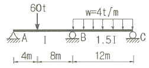
- 28.4t
- 36.3t
- 51.7t
- 59.5t
(정답률: 34%)
3. 내민보에 그림과 같이 지점 A에 모멘트가 작용하고, 집중하중이 보의 양 끝에 작용한다. 이 보에 발생하는 최대 휨모멘트의 절대값은?
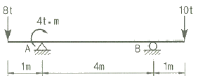
- 6 t·m
- 8 t·m
- 10 t·m
- 12 t·m
(정답률: 60%)
4. 그림과 같은 단주에서 800kg의 연직하중(P)이 편심거리 e에 작용할 때 단면에 인장력이 생기지 않기 위한 e의 한계는?
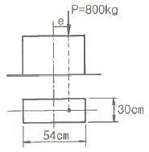
- 5cm
- 8cm
- 9cm
- 10cm
(정답률: 52%)
5. 그림과 같은 비대칭 3힌지 아치에서 힌지 C에 연직하중(P) 15t이 작용한다. A지점의 수평반력 HA는?
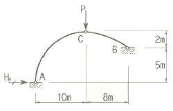
- 12.43 t
- 15.79 t
- 18.42 t
- 21.⑤ t
(정답률: 56%)
6. 그림과 같은 캔틸레버 보에서 A점의 처짐은? (단, AC구간의 단면2차모멘트 I이고, CB구간은 2I이며, 탄성계수 E는 전 구간이 동일하다.)
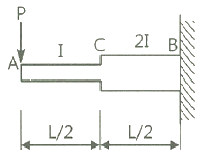
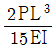
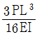
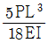
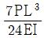
(정답률: 57%)
7. 아래 그림과 같은 불규칙한 단면의 A-A축에대한 단면 2차 모멘트는 35×106mm4 이다. 단면의 총 면적이 1.2×104mm2 이라면, B-B축에 대한 단면 2차모멘트는? (단, D-D축은 단면의 도심을 통과한다.)
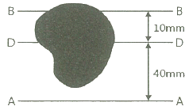
- 17×106mm4
- 15.8×106mm4
- 17×105mm4
- 15.8×105mm4
(정답률: 61%)
8. 평면응력상태 하에서의 모아(Mohr)의 응력원에 대한 설명으로 옳지 않은 것은?
- 최대 전단응력의 크기는 두 주응력의 차이와 같다.
- 모아 원으로부터 주응력의 크기와 방향을 구할 수 있다.
- 모아 원이 그려지는 두 축 중 연직(y)축은 전단응력의 크기를 나타낸다
- 모아 원 중심의 x 좌표 값은 직교하는 두축의 수직응력의 평균값과 같고, y 좌표 값은 0이다.
(정답률: 64%)
9. 아래 그림과 같은 트러스에서 U부재에 일어나는 부재내력은?
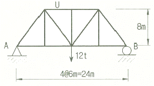
- 9t(압축)
- 9t(인장)
- 15t(압축)
- 15t(인장)
(정답률: 62%)
10. 탄성계수 E, 전단탄성계수 G, 푸아송 수 m 사이의 관계가 옳은 것은?
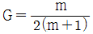
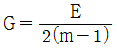
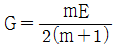
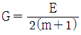
(정답률: 66%)
11. 아래 그림과 같은 캔틸레버 보에서 휨에 의한 탄성변형에너지는? (단, EI는 일정하다.)
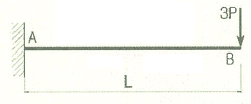
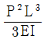
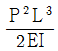
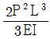
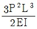
(정답률: 64%)
12. 그림과 같이 이축응력을 받고 있는 요소의 체적변형률은? (단, 탄성계수 E=2×106 kg/cm2, 푸아송 비 ν=0.3)
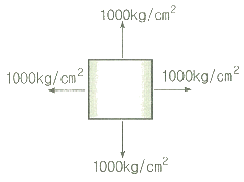
- 2.7 × 10-4
- 3.0 × 10-4
- 3.7 × 10-4
- 4.0 × 10-4
(정답률: 67%)
13. 다음 그림과 같은 단순보의 중앙점 C에 집중하중 P가 작용하여 중앙점의 처짐 δ가 발생했다. δ가 0이 되도록 양쪽지점에 모멘트 M을 작용시키려고 할 때, 이 모멘트의 크기 M을 하중 P와 지간 L로 나타낸 것으로 옳은 것은? (단, EI는 일정하다.)
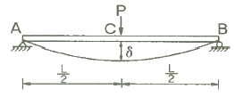
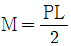
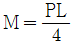
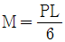
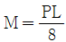
(정답률: 51%)
14. 그림과 같은 단순보에 이동하중이 작용할 때 절대 최대휨모멘트는?
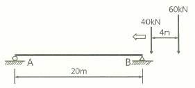
- 387.2 kN·m
- 423.2 kN·m
- 478.4 kN·m
- 531.7 kN·m
(정답률: 63%)
15. 다음의 부정정 구조물을 모멘트 분배법으로 해석하고자 한다. C점이 롤러지점임을 고려한 수정강도계수에 의하여 B점에서 C점으로 분배되는 분배율 fBC를 구하면?
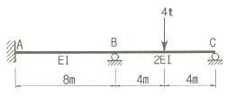
- 1/2
- 3/5
- 4/7
- 5/7
(정답률: 38%)
16. 그림과 같은 구조물에서 부재 AB가 6t의 힘을 받을 때 하중 P의 값은?
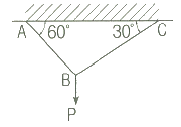
- 5.24 t
- 5.94 t
- 6.27 t
- 6.93 t
(정답률: 60%)
17. 어떤 보 단면의 전단응력도를 그렸더니 아래의 그림과 같았다. 이 단면에 가해진 전단력의 크기는? (단, 최대전단응력(τmax)은 6kg/cm2 이다.)
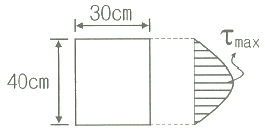
- 4200 kg
- 4800 kg
- 5400 kg
- 6000 kg
(정답률: 65%)
18. 아래 그림과 같은 보에서 A점의 반력이 B점의 반력의 두 배가 되는 거리 x는?
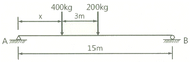
- 2.5 m
- 3.0 m
- 3.5 m
- 4.0 m
(정답률: 65%)
19. 그림과 같이 폭(b)와 높이(h)가 모두 12cm인 이등변삼각형의 x, y축에 대한 단면상승모멘트 Ixy는?
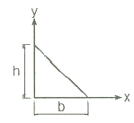
- 576 cm4
- 642 cm4
- 768 cm4
- 864 cm4
(정답률: 45%)
20. L이 10m인 그림과 같은 내민보의 자유단에 P=2t의 연직하중이 작용할 때 지점 B와 중앙부 C점에 발생되는 모멘트는?
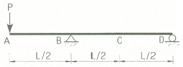
- MB=-8 t·m, MC=-5 t·m
- MB=-10 t·m, MC=-4 t·m
- MB=-10 t·m, MC=-5 t·m
- MB=-8 t·m, MC=-4 t·m
(정답률: 70%)
2과목: 측량학
21. 사진측량에 대한 설명 중 틀린 것은?
- 항공사진의 축척은 카메라의 초점거리에 비례하고, 비행고도에 반비례한다.
- 촬영고도가 동일한 경우 촬영기선길이가 증가하면 중복도는 낮아진다.
- 입체시된 영상의 과고감은 기선고도비가 클수록 커지게 된다.
- 과고감은 지도축척과 사진축척의 불일치에의해 나타난다.
(정답률: 42%)
22. 캔트(cant)의 크기가 C인 노선의 곡선 반지름을 2배로 증가시키면 새로운 캔드 C′의 크기는?
- 0.5C
- C
- 2C
- 4C
(정답률: 69%)
23. 대상구역을 삼각형으로 분할하여 각 교점의 표고를 측량한 결과가 그림과 같을 때 토공량은? (단위 : m)
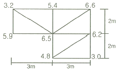
- 98 m3
- 100 m3
- 102 m3
- 104 m3
(정답률: 60%)
24. 수심 h인 하천의 수면으로부터 0.2h, 0.6h, 0.8h 인 곳에서 각각의 유속을 측정한 결과, 0.562m/s, 0.497m/s, 0.364m/s 이었다. 3점법을 이용한 평균유속은?
- 0.45 m/s
- 0.48 m/s
- 0.51 m/s
- 0.54 m/s
(정답률: 71%)
25. 그림과 같은 단면의 면적은? (단, 좌표의 단위는 m 이다.)
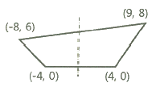
- 174 m2
- 148 m2
- 104 m2
- 87 m2
(정답률: 58%)
26. 각의 정밀도가 ±20″ 인 각측량기로 각을 관측할 경우, 각오차와 거리오차가 균형을 이루기 위한 줄자의 정밀도는?
- 약 1/10000
- 약 1/50000
- 약 1/100000
- 약 1/500000
(정답률: 64%)
27. 노선의 곡선반지름이 100m, 곡선길이가 20m일 경우 클로소이드(clothoid)의 매개변수(A)는?
- 22 m
- 40 m
- 45 m
- 60 m
(정답률: 67%)
28. 수준점 A, B, C에서 P점까지 수준측량을 한 결과가 표와 같다. 관측거리에 대한 경중률을 고려한 P점의 표고는?
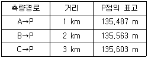
- 135.529 m
- 135.551 m
- 135.563 m
- 135.570 m
(정답률: 69%)
29. 그림과 같이 교호수준측량을 실시한 결과, a1=3.835m, b1=4.264m, a2=2.375m, b2=2.812m 이었다. 이 때 양안의 두 점 A와 B의 높이 차는? (단, 양안에서 시준점과 표척까지의 거리 CA=DB)
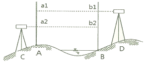
- 0.429 m
- 0.433 m
- 0.437 m
- 0.441 m
(정답률: 67%)
30. GNSS가 다중주파수 (multi frequency)를 채택하고 있는 가장 큰 이유는?
- 데이터 취득 속도의 향상을 위해
- 대류권지연 효과를 제거하기 위해
- 다중경로오차를 제거하기 위해
- 전리층지연 효과의 제거를 위해
(정답률: 44%)
31. 트래버스측량(다각측량)의 폐합오차 조정방법 중 컴파스법칙에 대한 설명으로 옳은 것은?
- 각과 거리의 정밀도가 비슷할 때 실시하는 방법이다.
- 위거와 경거의 크기에 비례하여 폐합오차를 배분한다.
- 각 측선의 길이에 반비례하여 폐합오차를 배분한다.
- 거리보다는 각의 정밀도가 높을 때 활용하는 방법이다.
(정답률: 56%)
32. 트래버스측량(다각측량)의 종류와 그 특징으로 옳지 않은 것은?
- 결합 트래버스는 삼각점과 삼각점을 연결시킨 것으로 조정계산 정확도가 가장높다
- 폐합 트래버스는 한 측점에서 시작하여 다시 그 측점에 돌아오는 관측 형태이다.
- 폐합 트래버스는 오차의 계산 및 조정이 가능 하나, 정확도는 개방 트래버스보다 낮다.
- 개방 트래버스는 임의의 한 측점에서 시작하여 다른 임의의 한 점에서 끝나는 관측 형태이다.
(정답률: 63%)
33. 삼각망 조정계산의 경우에 하나의 삼각형에 발생한 각오차의 처리 방법은? (단, 각관측 정밀도는 동일하다.)
- 각의 크기에 관계없이 동일하게 배분한다.
- 대변의 크기에 비례하여 배분한다.
- 각의 크기에 반비례하여 배분한다.
- 각의 크기에 비례하여 배분한다.
(정답률: 64%)
34. 종단수준측량에서는 중간점을 많이 사용하는 이유로 옳은 것은?
- 중심말뚝의 간격이 20m 내외로 좁기 때문에 중심말뚝을 모두 전환점으로 사용할 경우 오차가 더욱 커질 수 있기 때문이다.
- 중간점을 많이 사용하고 기고식 야장을 작성할 경우 완전한 검산이 가능하여 종단수죽측량의 정확도를 높일 수 있기 때문이다.
- B.M.점 좌우의 많은 점을 동시에 측량하여 세밀한 종단면도를 작성하기 위해서 이다.
- 핸드레벨을 이용한 작업에 적합한 측량방법이기 때문이다.
(정답률: 42%)
35. 표고 또는 수심을 숫자로 기입하는 방법으로 하천이나 항만 등에서 수심을 표시하는데 주로 사용되는 방법은?
- 영선법
- 채색법
- 음영법
- 점고법
(정답률: 69%)
36. 그림과 같은 유심 삼각망에서 점조건 조정식에 해당하는 것은?
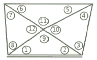
- (①+②+⑨) = 180°
- (①+②) = (⑤+⑥)
- (⑨+⑩+⑪+⑫) = 360°
- (①+②+③+④+⑤+⑥+⑦+⑧) = 360°
(정답률: 60%)
37. 120m의 측선을 30m 줄자로 관측하였다. 1회 관측에 따른 우연오차가 ±3 mm 이었다면, 전체 거리에 대한 오차는?
- ±3 mm
- ±6 mm
- ±9 mm
- ±12 mm
(정답률: 65%)
38. 완화곡선에 대한 설명으로 틀린 것은?
- 곡선 반지름은 완화곡선의 시점에서 무한대, 종점에서 원곡선의 반지름이 된다.
- 완화곡선에 연한 곡선 반지름의 감소율은 칸트의 증가율과 같다.
- 완화곡선의 접선은 시점에서 원호에, 종점에서 직선에 접한다.
- 종점에 있는 칸트는 원곡선의 칸트와 같게된다.
(정답률: 71%)
39. 축적 1 : 500 지형도를 기초로 하여 축척 1 : 3000 지형도를 제작하고자 한다. 축적 1 : 3000 도면 한 장에 포함되는 축척 1 : 500 도면의 매수는? (단, 1 : 500 지형도와 1 : 3000 지형도의 크기는 동일하다.)
- 16매
- 25매
- 36매
- 49매
(정답률: 71%)
40. 지오이드(Geoid)에 관한 설명으로 틀린 것은?
- 중력장 이론에 의한 물리적 가상면이다.
- 지오이드면과 기준타원체면은 일치한다.
- 지오이드는 어느 곳에서나 중력 방향과 수직을 이룬다.
- 평균 해수면과 일치하는 등포텐셜면이다.
(정답률: 62%)
3과목: 수리학 및 수문학
41. 다음 중 증발에 영향을 미치는 인자가 아닌 것은?
- 온도
- 대기압
- 통수능
- 상대습도
(정답률: 68%)
42. 유역면적이 15km2이고 1시간에 내린 강우량이 150mm 일 때 하천의 유출량이 350 m3/s 이면 유출율은?
- 0.56
- 0.65
- 0.72
- 0.78
(정답률: 56%)
43. 비압축성유체의 연속방정식을 표현한 것으로 가장 올바른 것은?
- Q = ρAV
- ρ1A1 = ρ2A2
- Q1A1V1 = Q2A2V2
- A1V1 = A2V2
(정답률: 65%)
44. 다음 물의 흐름에 대한 설명 중 옳은 것은?
- 수심은 깊으나 유속이 느린 흐름을 사류라 한다.
- 물의 분자가 흩어지지 않고 질서 정연히 흐르는 흐름을 난류라 한다.
- 모든 단면에 있어 유적과 유속이 시간에 따라 변하는 것을 정류라 한다.
- 에너지선과 동수 경사선의 높이의 차는 일반적으로 V2/2g 이다.
(정답률: 62%)
45. 미계측 유역에 대한 단위유량도의 합성방법이 아닌 것은?
- SCS 방법
- Clark 방법
- Horton 방법
- Snyder 방법
(정답률: 54%)
46. 표고 20m인 저수지에서 물을 표고 50m인 지점까지 1.0m3/sec의 물을 양수하는데 소요되는 펌프동력은? (단, 모든 손실수두의 합은 3.0m이고 모든 관은 동일한 직경과 수리학적 특성을 지니며, 펌프의 효율은 80%이다.)
- 248 kW
- 330 kW
- 404 kW
- 650 kW
(정답률: 58%)
47. 폭 35cm인 직사각형 위어(weir)의 유량을 측정하였더니 0.03m3/s 이었다. 월류수심의 측정에 1mm의 오차가 생겼다면, 유량에 발생하는 오차는? (단, 유량계산은 프란시스(Francis) 공식을 사용하되 월류 시 단면수축은 없는 것으로 가정한다.)
- 1.16%
- 1.50%
- 1.67%
- 1.84%
(정답률: 41%)
48. 여과량이 2m3/s, 동수경사가 0.2, 투수계수가 1cm/s 일 때 필요한 여과지 면적은?
- 1000 m2
- 1500 m2
- 2000 m2
- 2500 m2
(정답률: 66%)
49. 다음 표는 어느 지역의 40분간 집중 호우를 매 5분 마다 관측한 것이다. 지속기간이 20분인 최대강우강도는?
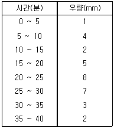
- I = 49 mm/hr
- I = 59 mm/hr
- I = 69 mm/hr
- I = 72 mm/hr
(정답률: 65%)
50. 길이 13m, 높이 2m, 폭 3m, 무게 20 ton인 바지선의 흘수는?
- 0.51m
- 0.56m
- 0.58m
- 0.46m
(정답률: 40%)
51. 개수로 내의 흐름에 대한 설명으로 옳은 것은?
- 에너지선은 자유표면과 일치한다.
- 동수경사선은 자유표면과 일치한다.
- 에너지선과 동수경사선은 일치한다.
- 동수경사선은 에너지선과 언제나 평행하다.
(정답률: 43%)
52. 상대조도에 관한 사항 중 옳은 것은?
- Chezy의 유속계수와 같다.
- Manning의 조도계수를 나타낸다.
- 절대조도를 관지름으로 곱한 것이다.
- 절대조도를 관지름으로 나눈 것이다.
(정답률: 54%)
53. 그림과 같이 물 속에 수직으로 설치된 넓이 2m×3m 의 수문을 올리는데 필요한 힘은? (단, 수문의 물 속 무게는 1960N 이고 수문과 벽면사이의 마찰계수는 0.25이다.)
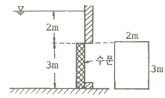
- 5.45 kN
- 53.4 kN
- 126.7 kN
- 271.2 kN
(정답률: 49%)
54. 단위중량 w, 밀도 ρ인 유체가 유속 V로서 수평방향으로 흐르고 있다. 지름 d, 길이 ℓ인 원주가 유체의 흐름방향에 직각으로 중심축을 가치고 놓였을 때 원주에 작용하는 항력(D)은? (단, C는 항력계수이다.)
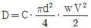
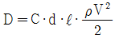
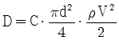
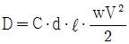
(정답률: 64%)
55. 도수 전후의 수심이 각각 2m, 4m 일 때 도수로 인한 에너지 손실(수두)은?
- 0.1 m
- 0.2 m
- 0.25 m
- 0.5 m
(정답률: 45%)
56. 다음 중 부정류 흐름의 지하수를 해석하는 방법은?
- Theis 방법
- Dupuit 방법
- Thiem 방법
- Laplace 방법
(정답률: 60%)
57. 부피 50m3인 해수의 무게(W)와 밀도(ρ)를 구한 값으로 옳은 것은? (단, 해수의 단위중량은 1.025 t/m3)
- W=5t, ρ=0.1046 kg·sec2/m4
- W=5t, ρ=104.6 kg·sec2/m4
- W=5.125t, ρ=104.6 kg·sec2/m4
- W=51.25t, ρ=104.6 kg·sec2/m4
(정답률: 56%)
58. 수리학상 유리한 단면에 관한 설명 중 옳지 않은 것은?
- 주어진 단면에서 윤변이 최소가 되는 단면이다.
- 직사각형 단면일 경우 수심이 폭의 1/2인 단면이다.
- 최대유량의 소통을 가능하게 하는 가장 경제적인 단면이다.
- 수심을 반지름으로 하는 반원을 외접원으로하는 제형단면이다.
(정답률: 50%)
59. 오리피스(orifice)에서의 유량 Q를 계산할 때 수두 H의 측정에 1%의 오차가 있으면 유량계산의 결과에는 얼마의 오차가 생기는가?
- 0.1 %
- 0.5 %
- 1 %
- 2 %
(정답률: 60%)
60. 폭 8 m의 구형단면 수로에 40m3/s의 물을 수심 5 m로 흐르게 할 때, 비에너지는? (단, 에너지 보정계수 α=1.11 로 가정한다.)
- 5.06 m
- 5.87 m
- 6.19 m
- 6.73 m
(정답률: 56%)
4과목: 철근콘크리트 및 강구조
61. 경간 l=10m 인 대칭 T형보에서 양쪽 슬래브의 중심 간 거리 2100 mm, 슬래브의 두께(t) 100 mm, 복부의 폭(bw) 400 mm일 때 플랜지의 유효폭은 얼마인가?
- 2000 mm
- 2100 mm
- 2300 mm
- 2500 mm
(정답률: 64%)
62. 다음 그림의 고장력 볼트 마찰이음에서 필요한 볼트 수는 최소 몇 개인가? (단, 볼트는 M22(ø=22mm), F10T 를 사용하며, 마찰이음의 허용력은 48kN이다.)
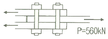
- 3개
- 5개
- 6개
- 8개
(정답률: 53%)
63. 철근 콘크리트보에 스터럽을 배근하는 가장 중요한 이유로 옳은 것은?
- 주철근 상호간의 위치를 바르게 하기 위하여
- 보에 작용하는 사인장 응력에 의한 균열을 제어하기 위하여
- 콘크리트와 철근과의 부착강도를 높이기 위하여
- 압축측 콘크리트의 좌굴을 방지하기 위하여
(정답률: 55%)
64. 아래 그림과 같은 두께 12 mm 평판의 순단면적은? (단, 구멍의 지름은 23 mm이다.)
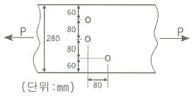
- 2310 mm2
- 2440 mm2
- 2772 mm2
- 2928 mm2
(정답률: 67%)
65. 그림과 같은 필릿용접의 유효목두께로 옳게 표시된 것은? (단, 강구조 연결 설계기준에 따름)
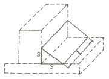
- S
- 0.9 S
- 0.7 S
- 0.5 ℓ
(정답률: 71%)
66. b=300 mm, d=600 mm, As=3-D35=2870 mm2 인 직사각형 단면보의 파괴양상은? (단, 강도 설계법에 의한 fy=300 MPa, fck=21 MPa 이다.)
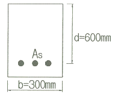
- 취성파괴
- 연성파괴
- 균형파괴
- 파괴되지 않는다.
(정답률: 57%)
67. 철근콘크리트 부재에서 처짐을 방지하기 위해서는 부재의 두께를 크게 하는 것이 효과적인데, 구조상 가장 두꺼워야 될 순서대로 나열된 것은? (단, 동일한 부재 길이(ℓ)를 갖는다고 가정)
- 캔틸레버 ＞ 단순지지 ＞ 일단연속 ＞ 양단연속
- 단순지지 ＞ 캔틸레버 ＞ 일단연속 ＞ 양단연속
- 양단연속 ＞ 양단연속 ＞ 단순지지 ＞ 캔틸레버
- 양단연속 ＞ 일단연속 ＞ 단순지지 ＞ 캔틸레버
(정답률: 66%)
68. 1방향 철근콘크리트 슬래브에서 설계기준 항복강도(fy)가 450 MPa인 이형철근을 사용한 경우 수축·온도철근 비는?
- 0.0016
- 0.0018
- 0.0020
- 0.0022
(정답률: 48%)
69. 프리스트레스의 도입 후에 일어나는 손실의 원인이 아닌 것은?
- 콘크리트의 크리프
- PS강재와 쉬스 사이의 마찰
- 콘크리트의 건조수축
- PS강재의 릴렉세이션
(정답률: 62%)
70. 폭이 400 mm, 유효깊이가 500 mm인 단철근 직사각형보 단면에서, 강도설계법에 의한 균형철근량은 약얼마인가? (단, fck=35 MPa, fy=400 MPa)
- 6135 mm2
- 6623 mm2
- 7409 mm2
- 7841 mm2
(정답률: 57%)
71. 복철근 콘크리트 단면에 인장철근비는 0.02, 압축철근비는 0.01이 배근된 경우 순간처짐이 20 mm일 때 6개월이 지난 후 총 처짐량은? (단, 작용하는 하중은 지속하중이며 6개월 재하기간에 따르는 계수
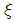
는 1.2 이다.)- 56 mm
- 46 mm
- 36 mm
- 26 mm
(정답률: 63%)
72. 그림과 같은 철근콘크리트 보 단면이 파괴 시 인장철근의 변형률은? (단, fck=28MPa, fy=350MPa, As=1520mm2)
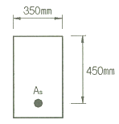
- 0.004
- 0.008
- 0.011
- 0.015
(정답률: 52%)
73. 다음은 프리스트레스트 콘크리트에 관한 설명이다. 옳지 않은 것은?
- 프리캐스트를 사용할 경우 거푸집 및 동바리공이 불필요하다.
- 콘크리트 전 단면을 유효하게 이용하여 RC부재보다 경간을 길게 할 수 있다.
- RC에 비해 단면이 작아서 변형이 크고 진동하기 쉽다.
- RC보다 내화성에 있어서 유리하다.
(정답률: 63%)
74. 그림과 같은 단면의 중간 높이에 초기 프리스트레스 900 kN을 작용시켰다 20%의 손실을 가정하여 하단 또는 상단의 응력이 영(零)이 되도록 이 단면에 가할 수 있는 모멘트의 크기는?
- 90 kN·m
- 84 kN·m
- 72 kN·m
- 65 kN·m
(정답률: 59%)
75. 철근콘크리트 부재의 피복두께에 관한 설명으로 틀린 것은?
- 최소 피복두께를 제한하는 이유는 철근의 부식방지, 부착력의 증대, 내화성을 갖도록 하기 위해서이다.
- 현장치기 콘크리트로서, 흙에 접하거나 옥외의 공기에 직접 노출되는 콘크리트의 최소 피복두께는 D25이하의 철근의 경우 40 mm이다.
- 현장치기 콘크리트로서, 흙에 접하여 콘크리트를 친 후 영구히 흙에 묻혀있는 콘크리트의 최소 피복두께는 80 mm이다.
- 콘크리트 표면과 그와 가장 가까이 배치된 철근 표면 사이의 콘크리트 두께를 피복두께라 한다.
(정답률: 49%)
76. 옹벽의 토압 및 설계일반에 대한 설명 중 옳지 않은 것은?
- 활동에 대한 저항력은 옹벽에 작용하는 수평력의 1.5배 이상이어야 한다.
- 뒷부벽식 옹벽의 저판은 정밀한 해석이 사용되지 않는 한, 3변 지지된 2방향 슬래브로 설계하여야 한다.
- 뒷부벽은 T형보로 설계하여야 하며, 앞부벽은 직사각형 보로 설게하여야 한다.
- 지반에 유발되는 최대 지반반력이 지반의 허용지지력을 초과하지 않아야 한다.
(정답률: 50%)
77. 폭 350 mm, 유효깊이 500 mm인 보에 설계기준 항복강도가 400 MPa인 D13 철근을 인장 주철근에 대한 경사각(α)이 60°인 U형 경사 스터럽으로 설치했을 때 전단보강철근의 공칭강도(Vs)는? (단, 스트럽 간격 s=250 mm, D13 철근 1본의 단면적은 127 mm2 이다.)
- 201.4 kN
- 212.7 kN
- 243.2 kN
- 277.6 kN
(정답률: 37%)
78. 보통중량 콘크리트의 설계기준강도가 35 MPa, 철근의 항복강도가 400 MPa로 설계된 부재에서 공칭지름이 25 mm인 압축 이형철근의 기본정착길이는?
- 425 mm
- 430 mm
- 1010 mm
- 1015 mm
(정답률: 46%)
79. 계수 하중에 의한 단면의 계수휨모멘트(Mu)가 350 kN·m 인 단철근 직사각형 보의 유효깊이(d)의 최솟값은? (단, ρ=0.0135, b=300mm, ck=24MPa, fy=300MPa, 인장지배 단면이다.)
- 245 mm
- 368 mm
- 490 mm
- 613 mm
(정답률: 38%)
80. 그림과 같은 나선철근 기둥에서 나선철근의 간격(pitch)으로 적당한 것은? (단, 소요나선철근비(ρs)는 0.018, 나선철근의 지름은 12 mm, Dc는 나선철근의 바깥지름)
- 61 mm
- 85 mm
- 93 mm
- 1⑤ mm
(정답률: 44%)
5과목: 토질 및 기초
81. 말뚝의 부마찰력에 대한 설명 중 틀린 것은?
- 부마찰력이 작용하면 지지력이 감소한다.
- 연약지반에 말뚝을 박은 후 그 위에 성토를 한 경우 일어나기 쉽다.
- 부마찰력은 말뚝 주변 침하량이 말뚝의 침하량보다 클 때 아래로 끌어내려리는 마찰력을 말한다.
- 연약한 점토에 있어서는 상대변위의 속도가 느릴수록 부마찰력은 크다.
(정답률: 63%)
82. 다음 중 점성토 지반의 개량공법으로 거리가 먼 것은?
- paper drain 공법
- vibro-flotation 공법
- chemico pile 공법
- sand compaction pile 공법
(정답률: 62%)
83. 표준압밀실험을 하였더니 하중 강도가 2.4 kg/cm2에서 3.6 kg/cm2로 증가할 때 간극비는 1.8에서 1.2로 감소하였다. 이 흙의 최종침하량은 약 얼마인가? (단, 압밀층의 두께는 20 m이다.)
- 428.64 cm
- 214.29 cm
- 642.86 cm
- 285.71 cm
(정답률: 33%)
84. 아래 그림과 같은 3m×3m 크기의 정사각형 기초의 극한지지력을 Terzaghi 공식으로 구하면? (단, 내부마찰각(ø)은 20°, 점착력(c)은 5 t/m2, 지지력계수 Nc=18, Nγ=5, Nq=7.5 이다.)
- 135.71 t/m2
- 149.52 t/m2
- 157.26 t/m2
- 174.38 t/m2
(정답률: 37%)
85. 아래 그림과 같이 지표면에 집중하중이 작용할 때 A점에서 발생하는 연직응력의 증가량은?
- 20.6 kg/m2
- 24.4 kg/m2
- 27.2 kg/m2
- 30.3 kg/m2
(정답률: 40%)
86. 모래지반에 30cm×30cm 의 재하판으로 재하실험을 한 결과 10 t/m2의 극한 지지력을 얻었다. 4m×4m의 기초를 설치할 때 기대되는 극한지지력은?
- 10 t/m2
- 100 t/m2
- 133 t/m2
- 154 t/m2
(정답률: 64%)
87. 단동식 증기 해머로 말뚝을 박았다. 해머의 무게 2.5 t, 낙하고 3 m, 타격 당 말뚝의 평균관입량 1cm, 안전율 6 일 때 Engineering News 공식으로 허용지지력을 구하면?
- 250 t
- 200 t
- 100 t
- 50 t
(정답률: 50%)
88. 예민비가 큰 점토란 어느 것인가?
- 입자의 모양이 날카로운 점토
- 입자가 가늘고 긴 형태의 점토
- 다시 반죽했을 때 강도가 감소하는 점토
- 다시 반죽했을 때 강도가 증가하는 점토
(정답률: 59%)
89. 사면의 안전에 관한 다음 설명 중 옳지 않은 것은?
- 임계 활동면이란 안전율이 가장 크게 나타나는 활동면을 말한다.
- 안전율이 최소로 되는 활동면을 이루는 원을 임계원이라 한다.
- 활동면에 발생하는 전단응력이 흙의 전단강도를 초과할 경우 활동이 일어난다.
- 활동면은 일반적으로 원형활동면으로 가정한다.
(정답률: 44%)
90. 다음과 같이 널말뚝을 박은 지반의 유선망을 작도하는데 있어서 경계조건에 대한 설명으로 틀린 것은?
 는 등수두선이다.
는 등수두선이다.- 는 등수두선이다.
- 는 유선이다.
- 는 등수두선이다.
(정답률: 56%)
91. 토립자가 둥글고 입도분포가 나쁜 모래 지반에서 표준관입시험을 한 결과 N치는 10이었다. 이 모래의 내부 마찰각을 Dunham의 공식으로 구하면?
- 21°
- 26°
- 31°
- 36°
(정답률: 59%)
92. 토압에 대한 다음 설명 중 옳은 것은?
- 일반적으로 정지토압 계수는 주동토압 계수보다 작다.
- Rankine 이론에 의한 주동토압의 크기는 Coulomb 이론에 의한 값보다 작다.
- 옹벽, 흙막이벽체, 널말뚝 중 토압분포가 삼각형 분포에 가장 가까운 것은 옹벽이다.
- 극한 주동상태는 수동상태보다 훨씬 더 큰 변위에서 발생한다.
(정답률: 43%)
93. 유선망의 특징을 설명한 것으로 옿지 않은 것은?
- 각 유로의 침투유량은 같다.
- 유선과 등수두선은 서로 직교한다.
- 유선망으로 이루어지는 사각형은 이론상 정사각형이다.
- 침투속도 및 동수경사는 유선망의 폭에 비례한다.
(정답률: 63%)
94. 어떤 종류의 흙에 대해 직접전단(일면전단) 시험을 한 결과 아래 표와 같은 결과를 얻었다. 이 값으로부터 점착력(c)을 구하면? (단, 시료의 단면적은 10cm2이다.)
- 3.0 kg/cm2
- 2.7 kg/cm2
- 2.4 kg/cm2
- 1.9 kg/cm2
(정답률: 45%)
95. 모래의 밀도에 따라 일어나는 전단특성에 대한 다음 설명 중 옳지 않은 것은?
- 다시 성형한 시료의 강도는 작아지지만 조밀한 모래에서는 시간이 경과됨에 따라 강도가 회복 된다.
- 내부마찰각(ø)은 조밀한 모래일수록 크다.
- 직접 전단시험에 있어서 전단응력과 수평변위 곡선은 조밀한 모래에서는 peak가 생긴다.
- 조밀한 모래에서는 전단변형이 계속 진행되면 부피가 팽창한다.
(정답률: 34%)
96. 다음은 전단시험을 한 응력경로이다. 어느 경우인가?
- 초기단계의 최대주응력과 최소주응력이 같은 상태에서 시행한 삼축압축시험의 전응력 경로이다.
- 초기단계의 최대주응력과 최소주응력이 같은 상태에서 시행한 일축압축시험의 전응력 경로이다.
- 초기단계의 최대주응력과 최소주응력이 같은 상태에서 Ko=0.5 인 조건에서 시행한 삼축압축시험의 전응력 경로이다.
- 초기단계의 최대주응력과 최소주응력이 같은 상태에서 Ko=0.7 인 조건에서 시행한 일축압축시험의 전응력 경로이다.
(정답률: 52%)
97. 흙 입자의 비중은 2.56, 함수비는 35%, 습윤단위중량은 1.75 g/cm3 일 때 간극률은 약 얼마인가?(오류 신고가 접수된 문제입니다. 반드시 정답과 해설을 확인하시기 바랍니다.)
- 32%
- 37%
- 43%
- 49%
(정답률: 47%)
98. 그림과 같이 모래층에 널말뚝을 설치하여 물막이공 내의 물을 배수하였을 때, 분사현상이 일어나기 않게 하려면 얼마의 압력( )을 가하여야 하는가? (단, 모래의 비중은 2.65, 간극비는 0.65, 안전율은 3)
- 6.5 t/m2
- 16.5 t/m2
- 23 t/m2
- 33 t/m2
(정답률: 44%)
99. 흙의 다짐 효과에 대한 설명 중 틀린 것은?
- 흙의 단위중량 증가
- 투수계수 감소
- 전단강도 저하
- 지반의 지지력 증가
(정답률: 57%)
100. Rod에 붙인 어떤 저항체를 지중에 넣어 관입, 인발 및 회전에 의해 흙의 전단강도를 측정하는 원위치 시험은?
- 보링(boring)
- 사운딩(sounding)
- 시료채취(sampling)
- 비파괴 시험(NDT)
(정답률: 59%)
6과목: 상하수도공학
101. 슬러지용량지표( SVI : sludge volume index)에 관한 설명으로 옳지 않은 것은?
- 정상적으로 운전되는 반응조의 SVI는 50~150 범위이다.
- SVI는 포기시간, BOD 농도, 수온 등에 영향을 받는다.
- SVI는 슬리지 밀도지수(SDI)에 100을 곱한 값을 의미한다.
- 반응조 내 혼합액을 30분간 정체한 경우 1g의 활성슬러지 부유물질이 포함하는 요적을 mL로 표시한 것이다.
(정답률: 58%)
102. 완속여과지에 관한 설명으로 옳지 않은 것은?
- 응집제를 필수적으로 투입해야 한다.
- 여과속도는 4~5m/d를 표준으로 한다,
- 비교적 양호한 원수에 알맞은 방법이다.
- 급속여과지에 비해 넓은 부지면적을 필요로 한다.
(정답률: 58%)
103. 수원지에서부터 각 가정까지의 상수도 계통도를 나타낸 것으로 옳은 것은?
- 수원-취수-도수-배수-정수-송수-급수
- 수원-취수-배수-정수-도수-송수-급수
- 수원-취수-도수-정수-송수-배수-급수
- 수원-취수-도수-송수-정수-배수-급수
(정답률: 68%)
104. 하수처리장에서 480000 L/day의 하수량을 처리한다. 펌프장의 습정(wet well)을 하수로 채우기 위하여 40분이 소요된다면 습정의 부피는?
- 13.3 m3
- 14.3 m3
- 15.3 m3
- 16.3 m3
(정답률: 56%)
1⑤. 혐기성 상태에서 탈질산화(denitrification) 과정으로 옳은 것은?
- 아질산성 질소→질산성 질소→질소가스(N2)
- 암모니아성 질소→질산성 질소→아질산성 질소
- 질산성 질소→아질산성 질소→질소가스(N2)
- 암모니아성 질소→아질산성 질소→질산성 질소
(정답률: 45%)
106. 합류식에서 하수 차집관로의 계획하수량 기준으로 옳은 것은?
- 계획시간최대오수량 이상
- 계획시간최대오수량의 3배 이상
- 계획시간최대오수량과 계획시간최대우수량의 합 이상
- 계획우수량과 계획시간최대오수량의 합의 2배 이상
(정답률: 53%)
107. 양수량 15.5 m3/min, 양정 24 m, 펌프효율 80%, 여유율(α) 15%일 때 펌프의 진동기 출력은?
- 57.8 kW
- 75.8 kW
- 78.2 kW
- 87.2 kW
(정답률: 40%)
108. 하수관로 매설시 관로의 최소 흙 두께는 원칙적으로 얼마로 하여야 하는가?
- 0.5 m
- 1.0 m
- 1.5 m
- 2.0 m
(정답률: 50%)
109. 활성탄처리를 적용하여 제거하기 위한 주요 항목으로 거리가 먼 것은?
- 질산성 질소
- 냄새유발물질
- THM 전구물질
- 음이온 계면활성제
(정답률: 37%)
110. 정수처리의 단위 조직으로 사용되는 오존처리에 관한 설명으로 틀린 것은?
- 유기물질의 생분해성을 증가시킨다.
- 염소주입에 앞서 오존을 주입하면 염소의 소비량을 감소시킨다.
- 오존은 자체의 높은 산화력으로 염소에비하여 높은 살균력을 가지고 있다.
- 인의 제거능력이 뛰어나고 수온이 높아져도 오존 소비량은 일정하게 유지된다.
(정답률: 53%)
111. 호수나 저수지에 대한 설명으로 틀린 것은?
- 여름에는 성층을 이룬다.
- 가을에는 순환(turn over)을 한다.
- 성층은 연직방향의 밀도차에 의해 구분된다.
- 성층 현상이 지속되면 하층부의 용존산소량이 증가한다.
(정답률: 60%)
112. 전양정 4 m, 회전속도 100 rpm, 펌프의 비교회전도가 920일 때 양수량은?
- 677 m3/min
- 834 m3/min
- 975 m3/min
- 1134 m3/min
(정답률: 52%)
113. 어느 도시의 급수 인구 자료가 표와 같을 때 등비증가법에 의한 2020년도의 예상 급수 인구는?
- 약 12000명
- 약 15000명
- 약 18000명
- 약 21000명
(정답률: 52%)
114. 수원(水源)에 관한 설명 중 틀린 것은?
- 심층수는 대지의 정화작용으로 인해 무균 또는 거의 이에 가까운 것이 보통이다.
- 용천수는 지하수가 자연적으로 지표로 솟아나온 것으로 그 성질은 대개 지표수와 비슷하다.
- 복류수는 어느 정도 여과된 것이므로 지표수에 비해 수질이 양호하며, 대개의 경우 침전지를 생략할 수 있다.
- 천층수는 지표면에서 깊지 않은 곳에 위치하여 공기의 투과가 양호하므로 산화작용이 활발하게 진행된다.
(정답률: 60%)
115. 수격현상(water hammer)의 방지 대책으로 틀린 것은?
- 펌프의 급정지를 피한다.
- 가능한 관내 유속을 크게 한다.
- 토출측 관로에 에어 챔버(air chamber)를 설치한다.
- 토출관 측에 압력 조정용 수조(surge tank)를 설치한다.
(정답률: 67%)
116. BOD 200 mg/L, 유량 600 m3/day 인 어느 식료품 공장폐수가 BOD 10 mg/L, 유량 2 m3/s 인 하천에 유입한다. 폐수가 유입되는 지점으로부터 하류 15 km지점의 BOD는? (단, 다른 유입원은 없고, 하천의 유속은 0.⑤ m/s, 20℃ 탈산소계수(K1)=0.1/day 이고, 상용대수, 20℃ 기준이며 기타 조건은 고려하지 않음)
- 4.79 mg/L
- 5.39 mg/L
- 7.21 mg/L
- 8.16 mg/L
(정답률: 33%)
117. 하수 슬러지처리 과정과 목적이 옳지 않은 것은?
- 소각 – 고형물의 감소, 슬러지 용적의 감소
- 소화 – 유기물과 분해하여 고형물 감소, 질적 안정화
- 탈수 – 수분제거를 통해 함수율 85% 이하로 양의 감소
- 농축 – 중간 슬러지 처리공정으로 고형물 농도의 감소
(정답률: 52%)
118. 다음 설명 중 옳지 않은 것은?
- BOD가 과도하게 높으면 DO는 감소하며 악취가 발생된다.
- BOD, COD는 오염의 지표로서 하수 중의 용존산소량을 나타낸다.
- BOD는 유기물이 호기성 상태에서 분해·안정화 되는데 요구되는 산소량이다.
- BOD는 보통 20℃에서 5일간 시료를 배양했을 때 소비된 용존산소량으로 표시된다.
(정답률: 53%)
119. 상수도 시설 중 접합정에 관한 설명으로 옳은 것은?
- 상부를 개방하지 않은 수로시설
- 복류수를 취수하기 위해 매설한 유공관로 시설
- 배수지 등의 유입수의 수위조절과 양수를 위한 시설
- 관로의 도중에 설치하여 주로 관로의 수압을 조절할 목적으로 설치하는 시설
(정답률: 58%)
120. 도수 및 송수관을 자연유하식으로 설계할 때 평균유속의 허용최대한도는?
- 0.3 m/s
- 3.0 m/s
- 13.0 m/s
- 30.0 m/s
(정답률: 67%)
세장비 = (π^2) x (E / (4 x (1 - v^2))) x (d / h)^2
여기서, E는 탄성계수, v는 포아손비율, d는 지름, h는 높이이다.
양단힌지로 가정하면, h = L/2 = 2m 이다.
세장비가 100이 되기 위해서는 다음과 같은 식이 성립해야 한다.
100 = (π^2) x (E / (4 x (1 - v^2))) x (d / h)^2
따라서, d를 구하기 위해서는 다음과 같은 식을 풀어야 한다.
d = h x √(100 x (4 x (1 - v^2)) / (π^2 x E))
각 보기의 지름을 대입해보면, 다음과 같은 결과를 얻을 수 있다.
- 12cm: d = 12cm = 0.12m
- 16cm: d = 16cm = 0.16m
- 18cm: d = 18cm = 0.18m
- 20cm: d = 20cm = 0.20m
이 중에서, d = 0.16m 인 16cm가 정답이다.